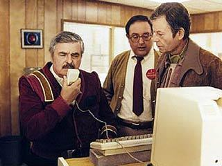

by emma rae nortona scrolling lecture on the computer mouse
1.I will argue here that the invention of the computer mouse helped to shift perceptions of, and how gender is enacted through, computing. I believe this object to be powerful in its potential to reroute perceptions and create new meaning.scroll down on the right

3.Since the early days of computing there has been a shift from being “close to the metal”scroll right

5.From women as programmersscroll right

7.From men as mouse usersscroll right

9.And now I wonder,scroll right

11Perhaps, these shifts can be unpacked through a deep understanding of the mouse as an object.scroll right

13.Instead, it interrupted them. In step with theorist Sadie Plant, I see the mouse as unlike its techno-phallic predecessors, the joystick and the light gun.scroll right
15.Rather, it is a shape that responds to your body. You do not hold it, but it holds you.scroll right
17.The mouse was invented 10 years prior to the graphical user interface.scroll right


20.For the first time on a computer screen you could situate yourself within. You the cursor.scroll down
21.The computer mouse sits somewhere in between the metal of your computer and your body.scroll right
23.In the 1950’s it was women who were programming computers the size of rooms.scroll right
26.Computers are now the size of phones. Again, it was always women who were operating the telephone, creating for it, new meaning.scroll right

29. Being close to the metal is also a metaphor. It is an acknowledgment that being close does not have to mean knowing, that there is value in the questioning and the complicating of knowing. If you are close to the metal then you are committed to re-evaluating and re-framing complex systems in order to have a fuller understanding of them. In this age of ubiquitous networked computing being close to the metal can mean beginning to unpack the underlying mechanics of this ubiquity,scroll down
30.its effect on the body. The mouse is multiplicities not only in its physical presence but also in its design.scroll right
32.The info-sphere, a symptom of this networked ubiquity, is navigated with and through the mouse. You open and close windows, scroll through images, guide your reading, click to buy, click to like.scroll right
34.The mouse can be helpful here. It brings you closer to the metal because it encourages you to pause, to contemplate the fact that your body is outside your computer, that you are not one with it.scroll down

35.There is a line in a 1983 PC Magazine article that says, “Mice allowed programmers the luxury of working without taking their eyes off the screen” And now, if you take your hands off the keyboard, you remove yourself of the chance of becoming an expert coder.scroll right

38.With the mouse you are forced to take a break. From the cyclical command and response of you to your computer. To move your hand onto the mouse, and then, off of it, and then, again, onto it. Those seconds in between hold you. They are about your body and how your body sits in this world not the world you imagine in your screen.scroll down
thank u for reading :-)please scroll down on the right
2.The mouse can also be seen as a site of contradictions within the history of computing. I would like to leverage these contradictions in order to complicate its history so that I can retell its story while it’s still here and still ubiquitous.scroll down on the left
4.to coding software within and for software. scroll left
6.to women as typists.scroll left
8.to men as programmers.scroll left
10.are programmers not just glorified typists? scroll left


12.The 1964 invention of the mouse by Doug Engelbart did not appear in tandem with the technologies before it.scroll left
14.It is not deterministic in its shape.scroll left
16.Theorist Ali Na writes in her paper the fetish of the click, “Instead of jacking in, the vulva mouse clicks, offering the power of the click or clit.”scroll left
18.It wasn’t until engineers at Apple designed the one button Apple Lisa mouse with a plastic cradle for the tracking ball that it became popular in the home or the office.scroll down

19.I’m left wondering how different it must have felt to use a soft, yonic shaped object which fit into the palm of the hand. It guides you to where you want to go and is always simultaneously re-shaping and re-routing your desire. (Na, 229)scroll left
22.I would like to posit that women, before the mouse and after, were always and already “close to the metal”.scroll left
24.In the 1970’s it was women who were typing into computers when they were the size of desks.scroll down
25.The mouse is key at this time. It almost immediately helped to shift perceptions away from the computer as typewriter.scroll left

scroll down
27. Being close to the metal is all at once a means and a value and a metaphor. It is a means of getting into the hardware, being able to get into the chip and understand its switches before layers of abstraction start to cover its mechanics.scroll down

28. It is also a value that wholly understanding the complexity of a given computational system is a necessary mode to be taken up by programmers and computer users alike. This value can also double as a fixation which puts the importance of this closeness over all else. If you are close to the metal, then you are a programmer in the truest form.scroll left
31.It is often that one person’s mouse is very different from the next persons. The design changes are subtle but perhaps change just enough so that you feel connected to your mouse. That it was made for your body.scroll left


33.While touchpad and touchscreen are becoming the primary vehicle of interaction, they are most certainly not concerned with what lies beneath. You are literally closer to the metal when using your laptop’s track-pad but I would argue that you are that much further away from understanding how your laptop works or more importantly how you work on your laptop.scroll left
36.If programmers don’t need to look down at their keys in order to write code is their process sped up so much so that they don’t have to think for one second about what it is they are actually doing? About how what they might be doing might also have an effect in the real world?scroll down
37.Perhaps the mouse can remind them.scroll left
if you would like to continue to follow this research i sometimes post updates to my twitter account @doodybrains you can also send an e-mail to marceldochamp[at]gmail[dot]com